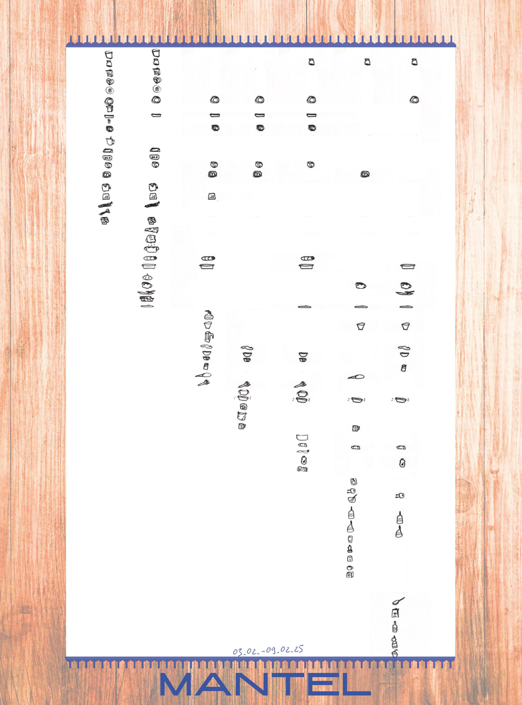
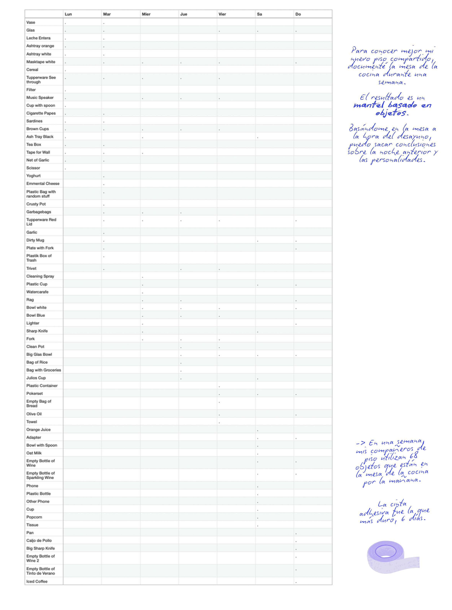
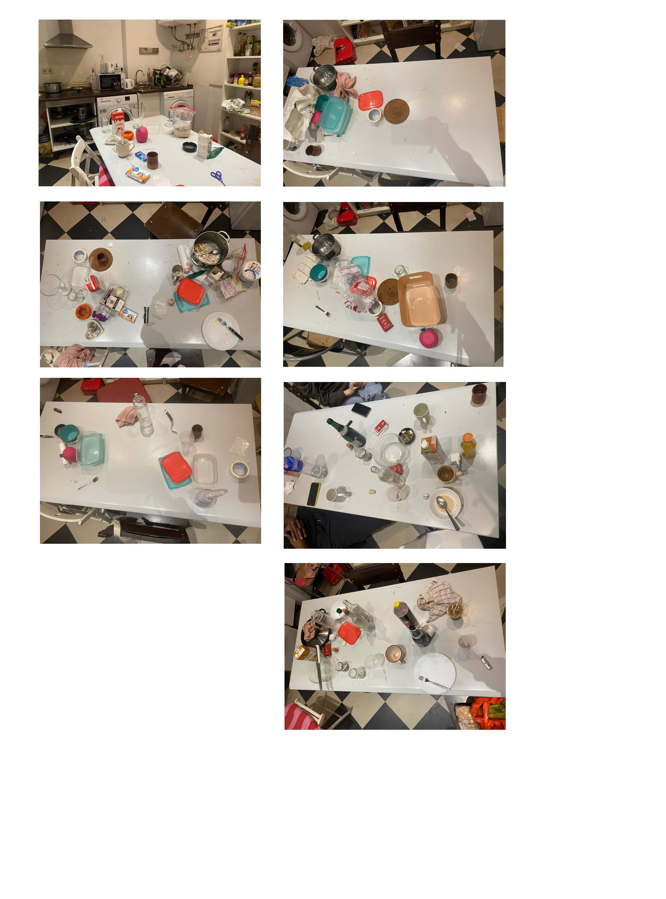

Exercise 3
Open Weather API: Air Pollution
Visualización de datos con p5.js
Para visualizar la contaminación atmosférica, he trabajado con la API Airpollution de Open Weather. Abre el artículo, introduce tu ubicación y desplácese hacia abajo. No solo verás una visualización de la contaminación, sino que también sabrás cuál es la calidad general del aire que respiras.
City:
Exercise 2
Understanding the Music of 2015-2019
Depuración de datos con Open Refine y visualización con Data Wrapper
Después de encontrarme con una extensa colección de metadatos sobre canciones entre 1950 y 2019, ¡tenía que visualizarla!
Mueve el cursor sobre el gráfico y prepárate para redescubrir algunos tesoros olvidados entre 2015 y 2019.
Para preparar los datos, los limpié con Open Refine y filtré solo algunas de las categorías de metadatos y solo el periodo 2015-2019.
Exercise 1
Dear Data
An exersize to rethink personal data!
Las diseñadoras Giorgia Lupi y Stefanie Posavec han demostrado cómo se hace: pasaron un año visualizando sus propios hábitos y observaciones de datos y los enviaron en forma de postales. Siguiendo su estilo, intenté conocer a mis compañeros de piso en la mesa de la cocina durante la primera semana en mi piso compartido. El resultado fue una recopilación de datos de los objetos que había en la mesa por la mañana durante 7 días. Se trata de datos cuantitativos, nominales. Los visualicé como un patrón de mantel.
   ¡Gracias por el interesante curso y por la gran consideración hacia mi español y mis conocimientos previos! He aprendido mucho y siempre esperaba con ganas las clases.